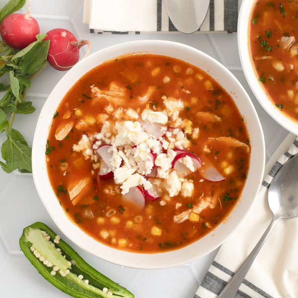

Mexican-Style Chicken, Corn, Jalapeño & Cilantro Soup with Feta

Prep Time
40 min
Nutrition (per serving)
583.3 kcalCalories
59 gProtein
32.5 gCarbs
25.5 gFat
Full nutrition table
| Calories | 583.3 kcal |
| Total fat | 25.5 g |
| Saturated fat | 8.4 g |
| Trans fat | 0.4 g |
| Cholesterol | 238.3 mg |
| Sodium | 631.7 mg |
| Carbohydrates | 32.5 g |
| Fiber | 7.2 g |
| Sugars | 11.4 g |
| Protein | 59 g |
| Potassium | 1665.4 mg |
| Calcium | 259.4 mg |
| Iron | 6.3 mg |
| Vitamin A | 999.8 IU |
| Vitamin C | 91.1 mg |
| Vitamin D | 6.8 IU |
Cookware
Ingredients
- 4 stickscelery
- 32 fl ozchicken or vegetable broth
- 2 lbchicken thighs, boneless skinless
- 1 small bunchcilantro
- 1 (4 oz) pkgcrumbled feta cheese
- 1 cupfrozen corn
- 4 clovesgarlic
- 2jalapeño peppers
- 1orange bell pepper
- 1 bunchradish
- 2 (8 oz) canstomato sauce
- 1 mediumyellow onion
- all-purpose flour
- apple cider vinegar
- black pepper
- chili powder
- coriander, ground
- cumin, ground
- extra virgin olive oil
- oregano, dried
- salt
Steps
- Wash and dry the fresh produce.4 sticks celery
1 orange bell pepper
2 jalapeño peppers
1 bunch radish
1 small bunch cilantro - Peel, halve, and small dice onion; peel and mince garlic. Place both in a medium bowl.1 medium yellow onion
4 cloves garlic - Trim and small dice celery; trim, seed, and medium dice bell pepper. Add both to the bowl with the onion and garlic.
- Preheat a large pot over medium-high heat.
- While the pot heats up, quarter jalapeño peppers lengthwise; seed and remove ribs with a spoon. Small dice and add to the bowl with the veggies. (Be careful with jalapeños; do not touch your eyes and ensure you wash your hands after handling or wear gloves while preparing.)
- Once the pot is hot, add oil and swirl to coat the bottom. Add veggies and cook, stirring frequently, until softened, 3-4 minutes. (Reserve bowl for later use.)2 tbsp extra virgin olive oil
- Add flour and spices to the pot; continue to cook, stirring frequently, until fragrant, about 1 minute.2 tbsp all-purpose flour
4 tsp chili powder
2 tsp cumin, ground
2 tsp coriander, ground
1 tsp oregano, dried
1 tsp salt
½ tsp black pepper - Add chicken, broth, and tomato sauce to the pot. Stir to combine, cover, and bring to a boil over high heat; once boiling, reduce heat to medium-low and simmer, stirring occasionally, until chicken is cooked through, 10-12 minutes.2 lb chicken thighs, boneless skinless
32 fl oz (4 cups) chicken or vegetable broth
2 (8 oz) cans tomato sauce - Meanwhile, trim, halve, and thinly slice radishes crosswise; place in the reserved bowl. Drizzle with vinegar, sprinkle with salt, and stir to combine; set aside to marinate.4 tsp apple cider vinegar
¼ tsp salt - Shave cilantro leaves off the stems; discard stems and mince the leaves.
- When the chicken is done, remove thighs to a plate using tongs (continue to simmer soup over low heat). Shred the chicken using two forks; use one fork to hold the chicken and the other fork to pull and shred the meat.
- Return shredded chicken to the pot, along with cilantro, corn, and additional vinegar; stir to combine the soup and continue to simmer until warmed through, 2-3 minutes more.1 cup frozen corn
4 tsp apple cider vinegar - To serve, divide soup between bowls; top with pickled radish and feta. Enjoy!1 (4 oz) pkg crumbled feta cheese